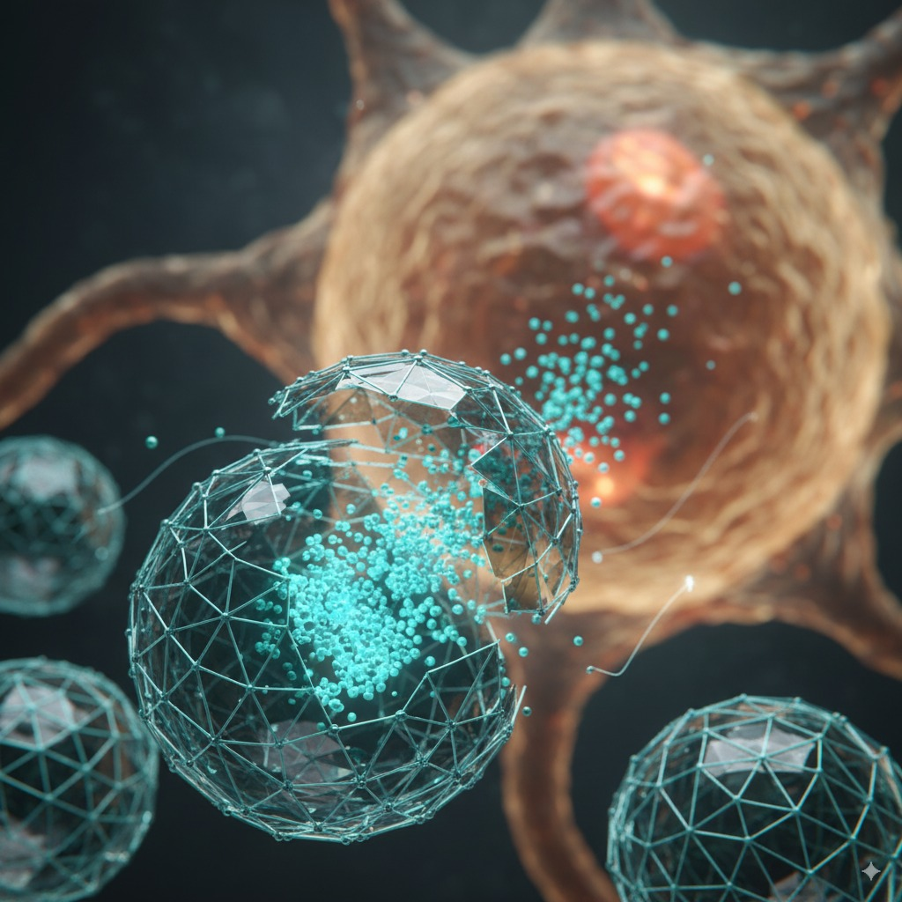
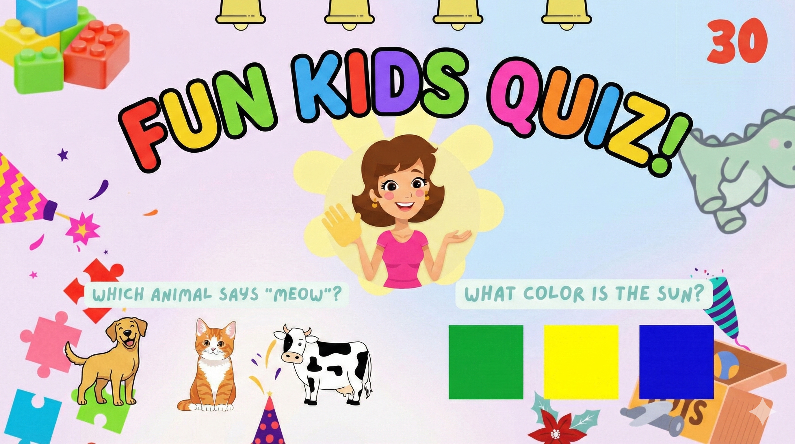
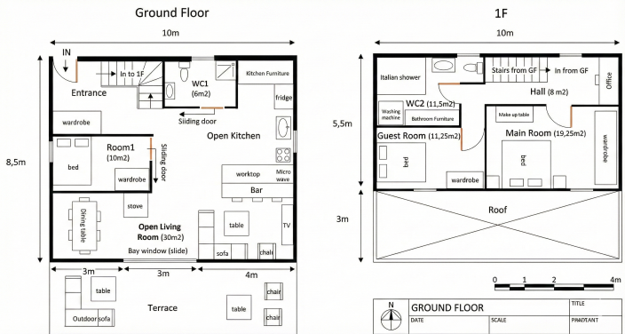

Volkan Kilinc, Ph.D.
Polyvalent Scientist & AI Architect
I apply the rigorous, first-principles mindset of a Ph.D. to a wide range of challenges. My career is defined by two interconnected paths: a deep foundation in scientific research and a forward-looking passion for architecting AI-powered solutions. Explore my achievements in each domain below.
Material Scientist
My foundational career in deep-tech R&D, focusing on nanotechnology, biosensors, soft materials and innovative materials in general. This path highlights my core scientific contributions, publications, and patented inventions.
View Scientific AchievementsAI Architect & Innovator
My current focus on applying scientific problem-solving to the world of AI. This path showcases my work in architecting and directing the creation of full-stack, AI-powered applications from concept to deployment.
Explore AI ProjectsPioneering Innovations in Nanotechnology & Materials Science.
My foundational career in deep-tech R&D, focused on inventing and developing novel technologies from first principles. This path highlights my core scientific contributions, patented inventions, and peer-reviewed publications.
Scientific Research Projects
DNA-FET for High-Speed Data Retrieval
Lead Researcher & Inventor
Developed and fabricated a proof-of-concept DNA Field-Effect Transistor (FET) for a novel electronic method of data location in DNA data storage. This foundational work led to a first-author publication and a Japanese patent application.

DNA-pods: Biomimetic Nanocarriers
Lead Researcher & Inventor
Designed and synthesized "DNA-pods," a novel class of self-assembled DNA condensates for cost-effective therapeutic delivery. Engineered a unique, thermally-triggered release mechanism inspired by viral uncoating.
Supervisor Testimonials
From My Ph.D. & Postdoctoral Work
"He exhibits great creativity in the laboratory, and I was impressed by his methodical approach and excellent technique, in particular, in dealing with such diverse technologies as transistor fabrication, solution chemistry and DNA hybridization."
Dr. Jonathan P. Hill
Group Leader, NIMS, Japan
"Volkan is a hard working person. His research skills improved drastically over his PhD term... He is highly dedicated to his research work and he is one of the few students I had whom really put what it takes to make it work."
Prof. Anne Charrier
CNRS Researcher, CINaM, France
"He is very active, amicable, social, adaptive, very co-operative with... leadership qualities with good communication skills, hard working with excellent potential as team leader as well as team player quality."
Prof. Jean-Manuel Raimundo
Former Head of Chemistry Dept., CINaM, France
From My Early Career Internships
"Thanks to his very good intellectual capacity, he was able to familiarize himself quickly with new subjects and contents. Mr. Kilinc worked independently and showed initiative. We appreciated him as an employee with a high degree of commitment and motivation."
Dr. Anna Di Gianni
Researcher, ABB Corporate Research, Switzerland
"The training period was short but he got accustomed to the experimental process and operating machines for analyses quickly during his stay. He tried several new experiments and he had strong responsibility and confidence for the research works."
Prof. Maekawa Hirofumi
Head of Chemistry Lab., Nagaoka University of Technology, Japan
Publications & Patents
Highlighted Publications
Kilinc, V.*, Sutrisno, L., Henzie, J., Picheau, E., Yamauchi, Y., Ariga, K., Hill, J.P.* (2026). Hierarchical Self-Assembly of Disulfide-Linked Single-Stranded DNA into Stimuli-Responsive Pods Chemistry of Materials.
Kilinc, V.*, Henzie, J., Picheau, E., Yamauchi, Y., Hill, J.* (2025). DNA Chromopods: Engineering Chromosome-Inspired Nanoarchitectures as Protocell Blueprints. ChemRxiv.
Kilinc, V.*, Hayakawa, R., Yamauchi, Y., Wakayama, Y., Hill, J.P.* (2024). Nanoporous Dna Field Effect Transistor with Potential for Random-Access Memory Applications. Advanced Sensor Research.
Nguy, T.P., Kilinc, V. (co-first author),Hayakawa, R., Henry-de-Villeneuve, C., Raimundo, J-M.*, Wakayama, Y.*, Charrier, A.* (2022). Affinity driven ion exchange EG-OFET sensor for high selectivity and low limit of detection of cesium in seawater. Sensors and Actuators B: Chemical.
Nguy, T.P., Hayakawa, R., Kilinc, V., Petit, M., Raimundo, J-M., Charrier, A., Wakayama, Y.* (2020). Electrolyte-Gated Organic Field-Effect Transistor for Ultra-Sensitive Cs Ion Sensor. ECS Meeting Abstracts.
Nguy, T.P., Hayakawa, R., Kilinc, V., Petit, M., Yemineni, N. S L V; Higuchi, M.; Raimundo, J-M., Charrier, A., Wakayama, Y.* (2020). Electrolyte-gated-organic field effect transistors functionalized by lipid monolayers with tunable pH sensitivity for sensor applications. Applied Physics Express.
Kilinc, V., Henry-de-Villeneuve, C., Nguy, T.P., Wakayama, Y., Charrier, A.*, Raimundo, J-M.* (2019). Novel and Innovative Interface as Potential Active Layer in Chem-FET Sensor Devices for the Specific Sensing of Cs+. ACS Applied Materials & Interfaces.
Nguy, T.P., Hayakawa, R., Kilinc, V., Petit, M., Raimundo, J-M., Charrier, A., Wakayama, Y.* (2019). Stable operation of water-gated organic field-effect transistor depending on channel flatness, electrode metals and surface treatment. Japanese Journal of Applied Physics.
Kenaan, A., El Zein, R., Kilinc, V., Lamant, S., Raimundo, J-M., Charrier, A.* (2018). Ultrathin Supported Lipid Monolayer with Unprecedented Mechanical and Dielectric Properties. Advanced Functional Materials.
Fredj, D., Pourcin, F., Alkarsifi, R., Kilinc, V., Liu, X., Ben Dkhil, S., Boudjada, N.C., Fahlman, M., Videlot-Ackermann, C., Margeat, O.*, Ackermann, J.*, Boujelbene, M.* (2018). Fabrication and Characterization of Hybrid Organic–Inorganic Electron Extraction Layers for Polymer Solar Cells toward Improved Processing Robustness and Air Stability. ACS Applied Materials & Interfaces.
Patents
Kilinc, V., Hill, J., Wakayama, Y. (2025). Dna detection substrate, fet-type dna sensor including the same, and method for manufacturing dna detection substrate JP2025098524A.
Wakayama, Y., Hayakawa, R., Nguy, T.P., Kilinc, V., Charrier, A., Raimundo, J-M. (2022). Alkali metal ion detection sensor and radioactive cesium ion detection sensor JP2022052613A.
My Doctoral Thesis
“Development of Organic Field-Effect Transistor for the detection of cesium in seawater”
Download Thesis (PDF)Architecting a Smarter Future by Solving Problems with AI.
I apply first-principles thinking and analytical rigor to deconstruct complex challenges. My focus is on architecting and directing the creation of impactful, AI-driven applications that deliver elegant, real-world solutions.
AI & Software Projects
Open AI Science - AI-Powered Peer Review
Project Lead & Architect
Conceived and directed the creation of a full-stack web application that uses a multi-agent AI system to automate and enhance the scientific peer-review process. Architected the complete technical stack from backend to frontend.
AI-Directed Crypto Gaming App (RoadToMars)
Project Lead & Architect
Directed a generative AI to architect and build a full-stack, real-time Web3 application on the Solana blockchain. Managed the complete DevOps lifecycle, from AI-assisted coding to cloud deployment.
AI-Powered Menu Redesign for Restaurant
Design Consultant
Leveraged generative AI to transform a local restaurant's menu. By replacing standard food photography with vibrant, high-quality AI-generated imagery, we created a more appealing and professional presentation designed to enhance the customer experience and elevate the brand.

Youtube Contents for Kids (GiggleGuessTV)
Design Consultant
Developed and launched an educational YouTube channel, Giggle & Guess TV, focused on high-engagement "edutainment" for toddlers and preschoolers. Created a series of interactive digital games—including animal identification, color recognition, and logic puzzles—designed with a child-safe, gentle aesthetic and clear learning objectives.

AI-Powered House Plan Design
Design Consultant
Executed the complete visualization of a modern residential concept from a schematic 3D plan. Populated the scene with realistic furniture, textures, and extensive exterior landscaping (swimming pool, patio, and vegetation), delivering comprehensive visual representations of the final design.
Consulting Services
Applying deep scientific expertise and advanced AI capabilities to solve your most complex challenges.
Scientific R&D Consulting
Leverage my expertise to accelerate your research and development in materials science, nanotechnology, and biosensors.
- ✓Project Ideation & Strategy
- ✓Experimental Design & Data Analysis
- ✓Surface Chemistry & Sensor Fabrication
AI-Assisted App Development
From rapid prototyping to full-stack deployment, I direct generative AI to build and launch innovative software solutions efficiently.
- ✓AI System Architecture Design
- ✓Rapid Prototyping & MVP Building
- ✓Workflow Automation Solutions
Academic & Student Mentorship
Supporting the next generation of scientists with guidance on research, funding, and career development.
- ✓Grant Writing Support (MSCA, EIC, ERC, etc.)
- ✓Publication & IP Strategy
- ✓Free consultations for students
Ready to Collaborate?
I am always open to discussing new projects and innovative ideas. Let's connect and explore how we can work together.
Schedule a MeetingGet in Touch
I'm open to discussing new projects, creative ideas, or opportunities to be part of your vision. Feel free to send me a message or schedule a meeting directly below.
Send Me a Message
Contact Details
For direct inquiries, you can reach me via email.
Schedule a Meeting Directly
Book a free introductory call using the calendar below.